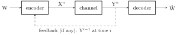
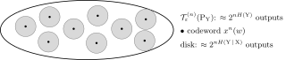

Lecture notes
Summary
- A scheme sends a uniform message \(\rv{W}\in\Wcal\) in \(n\) channel uses: the encoder computes \(x_i = f_i(w,y^{i-1})\) (with feedback; a codeword \(x^n(w)\) without), and the decoder returns \(\hat{\rv{W}} = g_n(\rv{Y}^n)\). Its rate is \(R_n = \frac{\log|\Wcal|}{n}\) bits per channel use, and its error probability \(\PP(\rv{W}\ne\hat{\rv{W}})\). A rate \(R\) is achievable if some schemes have \(\liminf_nR_n\ge R\) and \(P_{e,n}\to0\); the capacity \(C\) is the supremum of the achievable rates.
- A memoryless stationary channel satisfies \(\P_{\rv{Y}_i|\rv{W}\rv{X}^i\rv{Y}^{i-1}} = \P_{\rv{Y}_i|\rv{X}_i} = \P_{\rv{Y}|\rv{X}}\), and is identified with \(\P_{\rv{Y}|\rv{X}}\). Then \(\rv{W}\to\rv{Y}^n\to\hat{\rv{W}}\) and \((\rv{W},\rv{X}^{i-1},\rv{Y}^{i-1})\to\rv{X}_i\to\rv{Y}_i\).
- Shannon’s channel coding theorem: \(C = C_I := \max_{\P_{\rv{X}}}I(\P_{\rv{X}},\P_{\rv{Y}|\rv{X}})\). Converse: by Fano’s inequality \(H(\rv{W}\cond\hat{\rv{W}})\le H_2(P_e)+P_e\log(|\Wcal|-1)\), the chain rule, the memoryless channel and the concavity of \(I\) in \(\P_{\rv{X}}\), every scheme has \((1-P_e)\log|\Wcal|\le nC_I+H_2(P_e)\), even with feedback. Achievability: about \(2^{nI(\rv{X};\rv{Y})}\) random codewords drawn i.i.d. from \(\P_{\rv{X}}^n\) with a joint-typicality decoder have an average error probability tending to \(0\) (packing lemma), so some codebook does.
- The theorem extends to continuous alphabets (by discretization) and to input cost constraints \(\frac1n\sum_is(x_i)\le S\), with \(C(S) = \max_{\P_{\rv{X}}:\ \EE[s(\rv{X})]\le S}I(\P_{\rv{X}},\P_{\rv{Y}|\rv{X}})\).
- Capacities: \(C_{\mathrm{BSC}}(p) = 1-H_2(p)\), about \(0.531\) for \(p = 0.1\), against the rate \(\frac13\) and \(P_e = 0.028\) of the repetition code. The Gaussian channel has \(C(S) = \frac12\log(1+\frac{S}{\sigma^2})\), with Gaussian inputs, and the Gaussian MIMO channel \(\frac12\log\det(I+H\Sigma H^T)\), maximized over the matrices \(\Sigma\succeq0\) with \(\mathrm{tr}(\Sigma)\le S\).
- Source–channel separation: a source with the entropy \(H(\rv{V})\) per symbol can be sent reliably, with one channel use per symbol, if \(H(\rv{V}) < C\), and not if \(H(\rv{V}) > C\). Compressing first, then protecting the bits, is optimal.
Contents
- 5.1 The communication problem
- 5.2 Memoryless stationary channels
- 5.3 Shannon’s channel coding theorem
- 5.4 Converse
- 5.5 Achievability
- 5.6 Extensions
- 5.6.1 Continuous alphabets
- 5.6.2 Input cost constraints
- 5.7 Gaussian channels
- 5.8 Source–channel separation
5.1 The communication problem
In Lectures 3 and 4, a source was compressed into bits, and the bits reached the decoder without errors. In practice, bits are sent over a noisy medium (a cable, a radio link, an optical fiber, a hard disk), the channel, which corrupts some of them. Channel coding adds redundancy to the message, so that the receiver can recover it despite the noise:

Message.
The message \(\rv{W}\) is uniformly distributed on a message set \(\Wcal := \{1,\ldots,|\Wcal|\}\). For example, \(k\) bits from a compressed source form a message with \(|\Wcal| = 2^k\) values.
Encoder and decoder.
The channel is used \(n\) times, with the input sequence \(x^n\in\Xcal^n\) and the output sequence \(y^n\in\Ycal^n\), where the input alphabet \(\Xcal\) and the output alphabet \(\Ycal\) are finite until Section 5.6. The encoder computes the input at time \(i\) from the message, the past inputs and, if a feedback link returns the past outputs to the encoder, the past outputs. For a deterministic encoder, the past inputs add nothing: \(x_1\) depends on \(w\) only, and, by induction on \(i\), if \(x^{i-1}\) is a function of \((w,y^{i-2})\), then \(x_i\), a function of \((w,x^{i-1},y^{i-1})\), is a function of \((w,y^{i-1})\). So a deterministic encoder is a sequence of functions \(f_1,\ldots,f_n\) with
Without feedback, \(x_i = f_i(w)\), so the whole input sequence is a function of the message, \(x^n = x^n(w)\), the codeword of \(w\), and the encoder is the codebook \(\Ccal_n := \{x^n(1),\ldots,x^n(|\Wcal|)\}\). The decoder \(g_n:\Ycal^n\to\Wcal\) returns the estimate \(\hat{\rv{W}} := g_n(\rv{Y}^n)\) of the message.
Rate and error probability.
The pair \((\{f_i\}_{i=1}^n,g_n)\) is an \((n,R_n,P_{e,n})\) scheme if its rate, in bits per channel use, and its error probability, averaged over the uniform message, are
The rate is the number of message bits that each channel use carries: \(|\Wcal| = 2^{nR_n}\). With the error indicator \(\rv{E} := \ind{\rv{W}\ne\hat{\rv{W}}}\) and the error event \(\Ecal_n := \{\rv{W}\ne\hat{\rv{W}}\}\), the error probability is \(P_{e,n} = \EE[\rv{E}] = \PP(\Ecal_n)\). A randomized encoder also uses a private random seed \(\rv{U}\), independent of \(\rv{W}\) and of the channel. Its past inputs then matter, as they depend on \(\rv{U}\), but, by the same induction, it is the deterministic encoder \(x_i = f_i(w,u,y^{i-1})\) for each value \(u\) of the seed, and its error probability is the average over \(u\) of theirs: some \(u\) does at least as well. So randomization brings nothing, at the decoder too, and encoders and decoders are deterministic from now on.
Capacity.
A rate \(R\) is achievable if there exists a sequence of \((n,R_n,P_{e,n})\) schemes, \(n = 1,2,\ldots\), such that
In words, for every \(\delta > 0\) and every large enough \(n\), a scheme of length \(n\) carries at least \(R-\delta\) bits per channel use, with an error probability at most \(\delta\). The (operational) capacity of the channel is
the largest rate of reliable communication.
Example (repetition code). Let the channel be the binary symmetric channel \(\mathrm{BSC}(p)\): \(\Xcal = \Ycal = \{0,1\}\), and each input bit is flipped with probability \(p\), independently of everything else (Section 5.2). To send one bit (\(|\Wcal| = 2\)) in \(n = 3\) channel uses, repeat it: the codewords are \(000\) and \(111\), and the decoder takes a majority vote. It errs if and only if at least two of the three bits are flipped:
Repeating the bit \(2m+1\) times, the majority vote errs if more than \(m\) bits are flipped, which has a probability tending to \(0\) as \(m\to\infty\) if \(p < \frac12\) (law of large numbers), but the rate \(\frac{1}{2m+1}\) also tends to \(0\) (Problem 1). Can the error probability tend to \(0\) at a positive rate? Shannon’s answer, in Section 5.3: yes, at every rate below \(C = 1-H_2(0.1)\approx0.531\) bits per channel use, and at no rate above.
5.2 Memoryless stationary channels
The whole communication is described by the joint distribution of \((\rv{W},\rv{X}^n,\rv{Y}^n,\hat{\rv{W}})\). By the chain rule, in the time order \(\rv{W},\rv{X}_1,\rv{Y}_1,\ldots,\rv{X}_n,\rv{Y}_n,\hat{\rv{W}}\),
where \(\P_{\rv{W}}\) is uniform on \(\Wcal\), the encoder gives the factors \(\P_{\rv{X}_i|\rv{W}\rv{X}^{i-1}\rv{Y}^{i-1}} = \P_{\rv{X}_i|\rv{W}\rv{Y}^{i-1}}\), the point masses at the inputs \(f_i(w,y^{i-1})\), and the decoder gives \(\P_{\hat{\rv{W}}|\rv{W}\rv{X}^n\rv{Y}^n} = \P_{\hat{\rv{W}}|\rv{Y}^n}\), the point mass at \(g_n(y^n)\). The remaining factors, \(\P_{\rv{Y}_i|\rv{W}\rv{X}^i\rv{Y}^{i-1}}\), \(i = 1,\ldots,n\), describe the channel: how nature chooses the output at time \(i\) given the whole past. A general channel can depend on all of it, e.g., through echoes of past inputs. A channel is memoryless stationary if
for a channel \(\P_{\rv{Y}|\rv{X}}\in\Pcal(\Ycal|\Xcal)\) (Lecture 1). The first equality (memoryless) says that the output at time \(i\) depends on the past only through the current input; the second (stationary) that the same \(\P_{\rv{Y}|\rv{X}}\) acts at all times. Such a channel is identified with \(\P_{\rv{Y}|\rv{X}}\). Examples:
- the binary symmetric channel \(\mathrm{BSC}(p)\), \(p\in[0,1]\): \(\rv{Y} = \rv{X}\oplus\rv{Z}\), where \(\oplus\) is the addition modulo \(2\) and \(\rv{Z}\sim\Bern(p)\) is independent of \(\rv{X}\), i.e., \(\P_{\rv{Y}|\rv{X}=x}(y) = (1-p)\ind{y = x}+p\ind{y\ne x}\);
- the binary erasure channel \(\mathrm{BEC}(\delta)\), \(\delta\in[0,1]\): \(\Ycal = \{0,1,?\}\) and \(\P_{\rv{Y}|\rv{X}=x}(y) = (1-\delta)\ind{y = x}+\delta\ind{y = ?}\): each bit is erased with probability \(\delta\), and the receiver knows where;
- the Gaussian channel: \(\rv{Y} = \rv{X}+\rv{Z}\) with \(\rv{Z}\sim\Ncal(0,\sigma^2)\) independent of \(\rv{X}\), with real inputs and outputs (Sections 5.6 and 5.7).
Two Markov chains.
The converse only uses the following properties:
- \(\circnum{a}\) \(\rv{W}\to\rv{Y}^n\to\hat{\rv{W}}\), since \(\hat{\rv{W}} = g_n(\rv{Y}^n)\), for every channel;
- \(\circnum{b}\) \((\rv{W},\rv{X}^{i-1},\rv{Y}^{i-1})\to\rv{X}_i\to\rv{Y}_i\), \(i = 1,\ldots,n\), for every memoryless channel: this is the first equality above.
Both hold with or without feedback.
Without feedback.
The input sequence is the codeword \(\rv{X}^n = x^n(\rv{W})\), and, given the message, the outputs are independent, each produced by \(\P_{\rv{Y}|\rv{X}}\) from the corresponding input:
Indeed, given \(\rv{W} = w\), the inputs are \(x^i(w)\) whatever the outputs, so the chain rule gives \(\P_{\rv{Y}^n|\rv{W}=w}(y^n) = \prod_{i=1}^n \P_{\rv{Y}_i|\rv{W}\rv{X}^i\rv{Y}^{i-1}}(y_i\cond w,x^i(w),y^{i-1})\), and each factor is \(\P_{\rv{Y}|\rv{X}}(y_i\cond x_i(w))\). The \(n\) channel uses act as \(n\) independent copies of the channel. With feedback, the inputs depend on the past outputs, and \(\P_{\rv{Y}^n|\rv{X}^n}\) need not be the product of the \(\P_{\rv{Y}|\rv{X}}(y_i\cond x_i)\) (Problem 3): this is why memorylessness is defined by the distribution of each output given the past.
5.3 Shannon’s channel coding theorem
The information capacity of the channel \(\P_{\rv{Y}|\rv{X}}\) is
the largest mutual information \(I(\rv{X};\rv{Y})\) between the input and the output of one channel use, over the input distributions. The maximum exists: \(\Pcal(\Xcal)\) is compact, and \(\P_{\rv{X}}\mapsto I(\P_{\rv{X}},\P_{\rv{Y}|\rv{X}})\) is continuous (finite alphabets). This function is also concave (Lecture 1), so every local maximum is global. Since \(I(\rv{X};\rv{Y})\le\min\{H(\rv{X}),H(\rv{Y})\}\), \(0\le C_I\le\min\{\log|\Xcal|,\log|\Ycal|\}\).
Shannon’s channel coding theorem. For every memoryless stationary channel \(\P_{\rv{Y}|\rv{X}}\),
- Converse (necessity): every achievable rate \(R\) satisfies \(R\le C_I\), even with feedback, i.e., \(C\le C_I\).
- Achievability (sufficiency): for every \(\P_{\rv{X}}\in\Pcal(\Xcal)\), the rate \(I(\P_{\rv{X}},\P_{\rv{Y}|\rv{X}})\) is achievable without feedback, i.e., \(C\ge C_I\).
The operational capacity \(C\) is an optimization over all schemes of all lengths; the information capacity \(C_I\) is an optimization over a single input distribution, which can be computed (the example below, and Section 5.7). Below \(C\), the error probability can be made as small as desired; above \(C\), it cannot (Section 5.4). The rate \(C\) itself is achievable (with \(\P_{\rv{X}}\) a maximizer), and, since the achievability needs no feedback while the converse holds with feedback, feedback does not increase the capacity of a memoryless channel, although it can simplify the coding (Problem 4).
First example: the binary symmetric channel.
The information capacity of the \(\mathrm{BSC}(p)\) answers the question of Section 5.1.
Capacity of the binary symmetric channel. For \(p\in[0,1]\),
attained by the uniform input distribution \(\P_{\rv{X}} = \Bern(\frac12)\).
Let \(\rv{Y} = \rv{X}\oplus\rv{Z}\), with \(\rv{Z}\sim\Bern(p)\) independent of \(\rv{X}\). Given \(\rv{X} = x\), the map \(z\mapsto x\oplus z\) is one-to-one, so \(H(\rv{Y}\cond\rv{X}) = H(\rv{Z}\cond\rv{X}) = H(\rv{Z}) = H_2(p)\). With \(\Q := \Bern(\frac12)\) and \(H(\P)\le H(\P\|\Q)\) (Lecture 1), for every \(\P_{\rv{X}}\),
since \(H(\P_{\rv{Y}}\|\Q) = \EE[\log2] = 1\). The inequality is an equality if and only if \(\P_{\rv{Y}} = \Q\), which holds for \(\P_{\rv{X}} = \Bern(\frac12)\): \(\P_{\rv{Y}} = \Bern(\frac12\star p) = \Bern(\frac12)\). So \(C_I = 1-H_2(p)\), and \(C = C_I\) by the theorem.
The capacity is \(1\) for \(p\in\{0,1\}\) (for \(p = 1\), the decoder flips the bits back), and \(0\) for \(p = \frac12\), where the output is independent of the input.
Back to the example of Section 5.1. For \(p = 0.1\), \(C = 1-H_2(0.1)\approx0.531\): long blocks carry up to about \(0.53\) bits per channel use with an error probability as small as desired, while the repetition code of length \(3\) carries \(\frac13\) bit per channel use with \(P_e = 0.028\), and longer repetition codes have rates tending to \(0\). By the converse, no scheme with a rate above \(0.531\) has an error probability tending to \(0\), even with feedback. Other channels: the BEC has the capacity \(1-\delta\) (Problem 4), the Z-channel is solved in Problem 6, and channels with additive noise in Problem 5.
Shannon stated the theorem in 1948 and sketched its achievability with random codes and typical sequences; Feinstein gave the first rigorous proof in 1954, and Fano proved the converse in his 1952 lecture notes, with the inequality of Section 5.4. Shannon showed in 1956 that feedback does not increase the capacity, and Wolfowitz proved the strong converse in 1957. For decades, practical codes stayed far from capacity. Turbo codes (Berrou, Glavieux and Thitimajshima, 1993) and the rediscovered low-density parity-check (LDPC) codes of Gallager (1962) came within a fraction of a decibel of it, and polar codes (Arıkan, 2009) provably achieve the capacity of binary-input symmetric channels. 5G uses LDPC codes for its data and polar codes for its control information.
5.4 Converse
We show that every scheme, with or without feedback, with \(|\Wcal|\ge2\) messages and the error probability \(P_e := \PP(\rv{W}\ne\hat{\rv{W}})\) satisfies
Then, for \((n,R_n,P_{e,n})\) schemes with \(P_{e,n}\to0\), since \(nR_n = \log|\Wcal|\), \(P_e = P_{e,n}\) and \(H_2\le1\),
and every achievable rate satisfies \(R\le\liminf_nR_n\le C_I\). Hence \(C\le C_I\). The proof of \(\circnum{*}\) uses the two Markov chains of Section 5.2 and Fano’s inequality.
Fano’s inequality. Let \(\rv{W}\) and \(\hat{\rv{W}}\) be random variables with values in a finite set \(\Wcal\), \(|\Wcal|\ge2\), and let \(P_e := \PP(\rv{W}\ne\hat{\rv{W}})\). Then
The joint distribution of \((\rv{W},\hat{\rv{W}})\) is arbitrary: \(\rv{W}\) need not be uniform. A small error probability leaves little uncertainty about \(\rv{W}\) given \(\hat{\rv{W}}\): at most \(H_2(P_e)+P_e\log|\Wcal|\) bits.
[First proof (chain rule)] The error indicator \(\rv{E} := \ind{\rv{W}\ne\hat{\rv{W}}}\) is a function of \((\rv{W},\hat{\rv{W}})\), so that \(H(\rv{E}\cond\rv{W},\hat{\rv{W}}) = 0\). By the chain rule, applied twice,
First, \(H(\rv{E}\cond\hat{\rv{W}})\le H(\rv{E}) = H_2(P_e)\), since conditioning reduces entropy. Second,
since \(\rv{W} = \hat{\rv{W}}\) when \(\rv{E} = 0\), and, when \(\rv{E} = 1\) and \(\hat{\rv{W}} = \hat{w}\), \(\rv{W}\) takes values in \(\Wcal\setminus\{\hat{w}\}\), whose \(|\Wcal|-1\) elements carry an entropy at most \(\log(|\Wcal|-1)\) (maximum entropy, Lecture 1).
[Second proof (cross-entropy)] For each \(\hat{w}\in\Wcal\), let \(\Q_{\rv{W}|\hat{\rv{W}}=\hat{w}}\) be the pmf on \(\Wcal\)
which puts the mass \(1-P_e\) on the guess and spreads \(P_e\) evenly on the other messages. Since \(H(\P)\le H(\P\|\Q)\) for every \(\Q\) (Lecture 1), applied to each \(\P_{\rv{W}|\hat{\rv{W}}=\hat{w}}\) and averaged over \(\hat{\rv{W}}\),
with the convention \(0\log\frac10 = 0\) if \(P_e\in\{0,1\}\).
The second proof shows when Fano’s inequality is an equality: \(\P_{\rv{W}|\hat{\rv{W}}} = \Q_{\rv{W}|\hat{\rv{W}}}\), i.e., given the guess, the error has probability \(P_e\) and the wrong messages are equally likely (Problem 2).
Proof of \(\circnum{*}\).
Since \(\rv{W}\) is uniform, by the data processing inequality for \(\rv{W}\to\rv{Y}^n\to\hat{\rv{W}}\) (chain \(\circnum{a}\)) and Fano’s inequality,
It remains to show that \(I(\rv{W};\rv{Y}^n)\le nC_I\):
where \(\tilde{\P}_{\rv{X}} := \frac1n\sum_{i=1}^n\P_{\rv{X}_i}\). Moving \(P_e\log|\Wcal|\) to the left gives \(\circnum{*}\). \(\square\)
Remarks.
- Even with feedback. No step uses the absence of feedback. The chain bounds \(I(\rv{W};\rv{Y}^n)\), not \(I(\rv{X}^n;\rv{Y}^n)\), which can exceed \(nC_I\) with feedback (Problem 3).
- As in Lecture 4, the averaged distribution \(\tilde{\P}_{\rv{X}}\) is the distribution of the input \(\rv{X}_\rv{J}\) at a time \(\rv{J}\) drawn uniformly from \(\{1,\ldots,n\}\), independently of everything else.
- Above capacity. By \(\circnum{*}\), a scheme with \(\frac1n\log|\Wcal|\ge R > C_I\) has \(P_e\ge1-\frac{C_I}{R}-\frac{1}{nR}\), which does not tend to \(0\) (Problem 2). In fact, \(P_e\to1\) exponentially fast (strong converse): above capacity, almost every message is decoded wrongly.
5.5 Achievability
Fix \(\P_{\rv{X}}\in\Pcal(\Xcal)\), and let \(\P_{\rv{X}\rv{Y}} := \P_{\rv{X}}\P_{\rv{Y}|\rv{X}}\), with the marginal \(\P_{\rv{Y}} := \P_{\rv{Y}|\rv{X}}\circ\P_{\rv{X}}\) and \(I(\rv{X};\rv{Y}) = I(\P_{\rv{X}},\P_{\rv{Y}|\rv{X}})\). We show that the rate \(I(\rv{X};\rv{Y})\) is achievable without feedback. With \(\P_{\rv{X}}\) a maximizer in \(C_I\), this gives \(C\ge C_I\), and completes the proof of the theorem.
Random coding argument. Draw the codebook at random, and compute the error probability averaged over the codebooks and the message. At least one codebook has an error probability at most this average: there exist deterministic schemes as good as the random ones.
The average over random codebooks is much easier to compute than the error probability of any particular code.
i.i.d. inputs.
If an input sequence \(\rv{X}^n\sim\P_{\rv{X}}^n\) is sent without feedback, then \((\rv{X}^n,\rv{Y}^n)\sim\P_{\rv{X}\rv{Y}}^n\): the pairs \((\rv{X}_i,\rv{Y}_i)\) are i.i.d. with the distribution \(\P_{\rv{X}\rv{Y}}\), and \(\rv{Y}^n\sim\P_{\rv{Y}}^n\). Indeed, by Section 5.2, \(\P_{\rv{X}^n\rv{Y}^n}(x^n,y^n) = \P_{\rv{X}}^n(x^n)\prod_{i=1}^n\P_{\rv{Y}|\rv{X}}(y_i\cond x_i) = \prod_{i=1}^n\P_{\rv{X}\rv{Y}}(x_i,y_i)\).
The random code.
For each \(n\), let \(\epsilon := n^{-1/3}\), so that \(\epsilon\to0\) and \(n\epsilon^2 = n^{1/3}\to\infty\), and let
- \(\circnum{1}\) Codebook: draw the codewords \(\rv{X}^n(1),\ldots,\rv{X}^n(|\Wcal|)\) i.i.d. \(\sim\P_{\rv{X}}^n\), independently of the message and of the channel. They are revealed to the encoder and the decoder.
- \(\circnum{2}\) Encoder: send the codeword \(\rv{X}^n(w)\) of the message \(w\).
- \(\circnum{3}\) Decoder: return the smallest \(\hat{w}\) such that \((\rv{X}^n(\hat{w}),\rv{Y}^n)\in\Tcal_\epsilon^{(n)}(\P_{\rv{X}\rv{Y}})\) (jointly typical, Lecture 2), and \(\hat{w} := 1\) if there is none.
This decoder is not optimal (Problem 7), but it is enough to reach capacity.
Rate.
\(R_n = \frac{\log|\Wcal|}{n}\ge I(\rv{X};\rv{Y})-2\epsilon H(\rv{X})-\epsilon \to I(\rv{X};\rv{Y})\).
Error probability.
Let \(P_e(\Ccal_n)\) be the error probability of the scheme with the codebook \(\Ccal_n\). Averaged over the random codebook, \(\EE[P_e(\Ccal_n)]\) is the probability of \(\Ecal_n = \{\rv{W}\ne\hat{\rv{W}}\}\) under the joint distribution of the codebook, the message and the channel. The decoder returns \(\rv{W}\) if the codeword sent is jointly typical with the output and no other codeword is, so \(\Ecal_n\subseteq\Ecal^{(1)}\cup\Ecal^{(2)}\), where
- The codeword sent. Given \(\rv{W} = w\), the codeword \(\rv{X}^n(w)\sim\P_{\rv{X}}^n\) is sent over the channel, so \((\rv{X}^n(w),\rv{Y}^n)\sim\P_{\rv{X}\rv{Y}}^n\), and \(\PP(\Ecal^{(1)})\le\delta_T(\epsilon,n,\P_{\rv{X}\rv{Y}})\) (Lecture 2, Section 2.3).
- The other codewords. Given \(\rv{W} = w\), the output \(\rv{Y}^n\) depends only on \(\rv{X}^n(w)\) and on the channel, so each other codeword \(\rv{X}^n(\hat{w})\), \(\hat{w}\ne w\), has the distribution \(\P_{\rv{X}}^n\) and is independent of \(\rv{Y}^n\): \((\rv{X}^n(\hat{w}),\rv{Y}^n)\sim\P_{\rv{X}}^n\P_{\rv{Y}}^n\). Such a pair looks jointly typical with a probability of only about \(2^{-nI(\rv{X};\rv{Y})}\).
Packing lemma. Let \(\epsilon\in(0,1]\), \(K\ge1\), let \(\rv{Y}^n\) be a random sequence in \(\Ycal^n\) with any distribution, and let \(\tilde{\rv{X}}^n(1),\ldots,\tilde{\rv{X}}^n(K)\) be random sequences, each with the distribution \(\P_{\rv{X}}^n\) and independent of \(\rv{Y}^n\). Then
which tends to \(0\) if \(K2^{-n(I(\rv{X};\rv{Y})-2\epsilon H(\rv{X}))}\to0\).
By the union bound over \(k\), it suffices to bound the probability of each event by \(2^{-n(I(\rv{X};\rv{Y})-2\epsilon H(\rv{X}))}\). Since \(\tilde{\rv{X}}^n(k)\) is independent of \(\rv{Y}^n\),
by the joint typicality lemma (Lecture 2, Section 2.4), whose upper bound holds for every \(y^n\).
The codewords need not be independent of each other. Why \(I(\rv{X};\rv{Y})\)? There are about \(2^{nH(\rv{Y})}\) typical output sequences, and the output of a codeword is, with high probability, one of the about \(2^{nH(\rv{Y}\cond\rv{X})}\) sequences jointly typical with it (Lecture 2). The decoder can tell the codewords apart if these sets barely overlap, so at most about \(2^{n(H(\rv{Y})-H(\rv{Y}\cond\rv{X}))} = 2^{nI(\rv{X};\rv{Y})}\) codewords fit, and random codewords nearly achieve this packing:

End of the proof.
Apply the packing lemma given \(\rv{W} = w\), with the \(K := |\Wcal|-1\) other codewords. Since \(|\Wcal|-1 < 2^{n(I(\rv{X};\rv{Y})-2\epsilon H(\rv{X})-\epsilon)}\),
Therefore,
which tends to \(0\), since \(n\epsilon^2 = n^{1/3}\to\infty\). By the random coding argument, for each \(n\), some codebook \(\Ccal_n^*\) has an error probability \(P_{e,n} := P_e(\Ccal_n^*)\) at most this bound. These \((n,R_n,P_{e,n})\) schemes have \(R_n\to I(\rv{X};\rv{Y})\) and \(P_{e,n}\to0\), so the rate \(I(\rv{X};\rv{Y})\) is achievable. The proof of the theorem is complete.
Remarks.
- For a uniform message, the decoder with the least error probability returns the message whose codeword makes \(y^n\) most likely (maximum likelihood); for the BSC with \(p < \frac12\), this is the codeword closest to \(y^n\) in Hamming distance (Problem 7).
- The error probability is averaged over the messages. Removing the worse half of the codewords of a good codebook gives a code whose maximal error probability over the messages tends to \(0\), at a rate smaller by only \(\frac1n\) (Problem 8).
- A random codebook has no structure: it holds \(2^{nR_n}\) codewords, and the decoder searches all of them. Practical codes add structure (linear codes, LDPC and polar codes) to make encoding and decoding fast.
5.6 Extensions
5.6.1 Continuous alphabets
For channels with real inputs and outputs, such as the Gaussian channel, the definitions of Sections 5.1 and 5.2 are unchanged, with a channel \(\P_{\rv{Y}|\rv{X}}\) with densities, and \(C_I := \sup_{\P_{\rv{X}}}I(\P_{\rv{X}},\P_{\rv{Y}|\rv{X}})\); the supremum need not be attained, and is often infinite without a cost constraint (Section 5.6.2).
Converse. The proof of Section 5.4 still holds: Fano’s inequality only involves the finite \(\rv{W}\) and \(\hat{\rv{W}}\), and the chain rule, the data processing inequality and the concavity of the mutual information hold for general alphabets (Lecture 1).
Achievability, by discretization. Let \(\P_{\rv{X}}\) be an input distribution. Quantize the input with \([x]_N := \mathrm{sign}(x)\min\{\lfloor N|x|\rfloor/N,\,N\}\), which takes finitely many values, satisfies \(|[x]_N|\le|x|\), and tends to \(x\) as \(N\to\infty\). Let \(\rv{Y}_N\) be the output of the channel for the input \([\rv{X}]_N\), and \([\rv{Y}_N]_N\) its quantization. The channel from \([\rv{X}]_N\) to \([\rv{Y}_N]_N\) is a memoryless stationary channel with finite alphabets: the encoder only uses the finitely many values of \([\rv{X}]_N\), and the decoder quantizes each output first. By Section 5.5, the rate \(I([\rv{X}]_N;[\rv{Y}_N]_N)\) is achievable over it, hence over the original channel. As \(N\to\infty\), \(([\rv{X}]_N,[\rv{Y}_N]_N)\to(\rv{X},\rv{Y})\) in distribution for the usual channels (e.g., for \(\rv{Y} = \rv{X}+\rv{Z}\), \(\rv{Y}_N = [\rv{X}]_N+\rv{Z}\to\rv{Y}\)), and the mutual information is lower semicontinuous under convergence in distribution (admitted here):
So every rate below \(I(\rv{X};\rv{Y})\) is achievable, and \(C\ge C_I\).
5.6.2 Input cost constraints
A transmitter has limited power. Let \(s:\Xcal\to[0,\infty)\) be a cost function and \(S\ge s_{\min} := \min_xs(x)\). Every input sequence must satisfy the input constraint
for every message (and every output sequence, with feedback). For example, \(s(x) = x^2\) is the power, and \(s(x) = \ind{x\ne0}\) the Hamming weight (sending a \(1\) costs energy, a \(0\) does not). The capacity \(C(S)\) is the supremum of the rates achievable under the constraint, and the information capacity is
where the maximum exists, since the constraint set is closed in the compact set \(\Pcal(\Xcal)\) (a supremum for continuous alphabets).
Capacity with an input constraint. For every memoryless stationary channel \(\P_{\rv{Y}|\rv{X}}\) and every \(S\ge s_{\min}\),
Converse. The proof of Section 5.4 holds until \(I(\rv{W};\rv{Y}^n)\le nI(\tilde{\P}_{\rv{X}},\P_{\rv{Y}|\rv{X}})\), and the averaged distribution satisfies the constraint in expectation:
since every input sequence satisfies the constraint. So \(I(\tilde{\P}_{\rv{X}},\P_{\rv{Y}|\rv{X}})\le C_I(S)\), and every achievable rate is at most \(C_I(S)\), as in Section 5.4.
Achievability. Let \(\P_{\rv{X}}\) satisfy \(\EE[s(\rv{X})] < S\), and let \(x_0\) satisfy \(s(x_0) = s_{\min}\). Use the random codebook and the decoder of Section 5.5, but let the encoder send \(\rv{X}^n(w)\) only if it satisfies the constraint, and the sequence \(x_0^n := (x_0,\ldots,x_0)\) otherwise. Let \(\Ecal'\) be the event that \(\rv{X}^n(\rv{W})\) violates the constraint; it depends only on the codebook and the message. Outside \(\Ecal'\), the new scheme sends the same sequence as the scheme of Section 5.5, so the codebook, the message and the output have the same joint distribution on \(\Ecal'^c\) in both schemes, and the new average error probability is at most \(\PP(\Ecal')\) plus the old one. For \(n\) large enough, \((1+\epsilon)\EE[s(\rv{X})]\le S\), and every \(x^n\in\Tcal_\epsilon^{(n)}(\P_{\rv{X}})\) satisfies \(\frac1n\sum_is(x_i)\le(1+\epsilon)\EE[s(\rv{X})]\le S\), by the typical average lemma (Lecture 2), since \(s\ge0\). Hence \(\PP(\Ecal')\le\PP\bigl(\rv{X}^n(\rv{W})\notin\Tcal_\epsilon^{(n)}(\P_{\rv{X}})\bigr) \le\delta_T(\epsilon,n,\P_{\rv{X}})\to0\), and the rate \(I(\P_{\rv{X}},\P_{\rv{Y}|\rv{X}})\) is achievable under the constraint.
From \(<S\) to \(\le S\). If \(S = s_{\min}\), the constraint forces every input symbol to lie in \(\Xcal_0 := \{x :\ s(x) = s_{\min}\}\), and both sides are the capacities of the channel restricted to the inputs \(\Xcal_0\), without constraint, which are equal by the theorem. If \(S > s_{\min}\) and \(\EE[s(\rv{X})]\le S\), the mixture \(\P_\lambda := (1-\lambda)\P_{\rv{X}}+\lambda\Q_0\), with \(\Q_0\) the point mass at \(x_0\) and \(\lambda\in(0,1]\), has \(\EE_{\P_\lambda}[s(\rv{X})]\le(1-\lambda)S+\lambda s_{\min} < S\), and, by concavity, \(I(\P_\lambda,\P_{\rv{Y}|\rv{X}})\ge(1-\lambda)I(\P_{\rv{X}},\P_{\rv{Y}|\rv{X}})+\lambda\cdot0\), which tends to \(I(\P_{\rv{X}},\P_{\rv{Y}|\rv{X}})\) as \(\lambda\to0\). So \(C(S)\ge C_I(S)\).
The same concavity argument shows that \(S\mapsto C_I(S)\) is concave and increasing. For real alphabets, the quantizer of Section 5.6.1 keeps the constraint when \(s(x)\) increases with \(|x|\), e.g., for the power \(s(x) = x^2\), since \(|[x]_N|\le|x|\): the extension combines with the discretization. For example, with the Hamming constraint \(\frac1n\sum_ix_i\le S\), the BSC has the capacity \(H_2(\min\{S,\frac12\}\star p)-H_2(p)\) (Problem 9).
5.7 Gaussian channels
For the Gaussian channel \(\rv{Y} = \rv{X}+\rv{Z}\), with \(\rv{Z}\sim\Ncal(0,\sigma^2)\) independent of the input \(\rv{X}\), the cost is the power, \(s(x) = x^2\): every input sequence satisfies \(\frac1n\sum_{i=1}^nx_i^2\le S\). Without this constraint, the capacity is infinite.
Capacity of the Gaussian channel.
attained by the Gaussian input distribution \(\P_{\rv{X}} = \Ncal(0,S)\).
The density \(q\) of \(\Ncal(0,v)\), \(v > 0\), satisfies \(\log\frac{1}{q(y)} = \frac12\log(2\pi v)+\frac{\log e}{2}\frac{y^2}{v}\). So every distribution \(\P_{\rv{Y}}\) with \(\EE[\rv{Y}^2] = v\) has the cross-entropy
and, in particular, \(h(\Ncal(0,v)) = \frac12\log(2\pi ev)\).
Let \(\P_{\rv{X}}\) satisfy \(\EE[\rv{X}^2]\le S\). Since \(\rv{X}\) and \(\rv{Z}\) are independent and \(\EE[\rv{Z}] = 0\), \(v := \EE[\rv{Y}^2] = \EE[\rv{X}^2]+\sigma^2\). Given \(\rv{X} = x\), \(\rv{Y}-x = \rv{Z}\), and a translation does not change the differential entropy, so \(h(\rv{Y}\cond\rv{X}) = h(\rv{Z}\cond\rv{X}) = h(\rv{Z}) = \frac12\log(2\pi e\sigma^2)\). By \(h(\P)\le h(\P\|\Q)\) (Lecture 1) with \(\Q := \Ncal(0,v)\),
The first inequality is an equality if and only if \(\P_{\rv{Y}} = \Ncal(0,v)\), which holds if \(\rv{X}\sim\Ncal(0,\EE[\rv{X}^2])\) (a sum of independent Gaussian variables is Gaussian), and the second if and only if \(\EE[\rv{X}^2] = S\). So \(C_I(S) = \frac12\log(1+\frac{S}{\sigma^2})\), attained by \(\Ncal(0,S)\), and \(C(S) = C_I(S)\) by Section 5.6.
The ratio \(\frac{S}{\sigma^2}\) is the signal-to-noise ratio (SNR). At high SNR, \(C\approx\frac12\log\mathrm{SNR}\): doubling the power adds only half a bit per channel use. A channel of bandwidth \(B\) hertz carries about \(2B\) real samples per second (sampling theorem), which gives Shannon’s formula \(B\log(1+\mathrm{SNR})\) bits per second.
Several antennas.
The multiple-input multiple-output (MIMO) Gaussian channel models a wireless link with \(n_t\) transmit and \(n_r\) receive antennas:
where the matrix \(H\in\mathbb{R}^{n_r\times n_t}\) is fixed and known, and the noise \(\rv{Z}\) is independent of the input \(\rv{X}\). The power constraint is \(\frac1n\sum_{i=1}^n\|x_i\|^2\le S\), i.e., \(s(x) = \|x\|^2\).
Capacity of the Gaussian MIMO channel.
attained by the input \(\rv{X}\sim\Ncal(0,\Sigma^*)\), with \(\Sigma^*\) a maximizer.
The proof is the same, with matrices. The density \(q\) of \(\Ncal(0,K)\) on \(\mathbb{R}^m\), \(K\succ0\), satisfies \(\log\frac{1}{q(y)} = \frac12\log\det(2\pi K)+\frac{\log e}{2}\,y^TK^{-1}y\), and \(\EE[\rv{Y}^TK^{-1}\rv{Y}] = \mathrm{tr}(K^{-1}\EE[\rv{Y}\rv{Y}^T]) = m\) if \(\EE[\rv{Y}\rv{Y}^T] = K\). So every such \(\P_{\rv{Y}}\) has \(h(\P_{\rv{Y}}\|\Ncal(0,K)) = \frac12\log\det(2\pi eK)\), and \(h(\Ncal(0,K)) = \frac12\log\det(2\pi eK)\).
Let \(\P_{\rv{X}}\) satisfy \(\EE[\|\rv{X}\|^2]\le S\), and let \(\Sigma_{\rv{X}} := \EE[\rv{X}\rv{X}^T]\), so that \(\mathrm{tr}(\Sigma_{\rv{X}}) = \EE[\|\rv{X}\|^2]\le S\). Then \(K := \EE[\rv{Y}\rv{Y}^T] = I_{n_r}+H\Sigma_{\rv{X}}H^T\), \(h(\rv{Y}\cond\rv{X}) = h(\rv{Z}) = \frac12\log\det(2\pi eI_{n_r})\), and
with equality if \(\rv{X}\sim\Ncal(0,\Sigma_{\rv{X}})\). So \(C_I(S)\) is the maximum over the matrices \(\Sigma_{\rv{X}}\succeq0\) with \(\mathrm{tr}(\Sigma_{\rv{X}})\le S\), which exists since this set is compact, and \(C(S) = C_I(S)\) by Section 5.6.
For \(n_t = n_r = 1\) and \(H = \frac1\sigma\) (divide the output by \(\sigma\)), this is the capacity of the scalar channel.
Parallel channels.
If \(H\) is diagonal, the MIMO channel is a set of parallel scalar channels, and the best power allocation “fills water” over the noise levels (Problem 10). Every \(H\) reduces to this case by its singular value decomposition \(H = U\Lambda V^T\), since the rotations \(U\) and \(V\) change neither the power nor the noise. With \(n_t = n_r\) antennas and an invertible \(H\), the capacity grows like \(\frac{n_t}{2}\log S\) at high SNR: multiple antennas multiply the capacity (Foschini and Gans, 1998; Telatar, 1999), the basis of MIMO in Wi-Fi, 4G and 5G.
5.8 Source–channel separation
Lectures 3 and 4 turn a source into bits, and this lecture sends bits over a channel. Is it optimal to design the two codes separately? Let \(\rv{V}^n\) be \(n\) i.i.d. source symbols with the distribution \(\P_{\rv{V}}\) on a finite alphabet \(\Vcal\), \(|\Vcal|\ge2\). A scheme sends them in \(n\) uses of a memoryless stationary channel of capacity \(C\), with any encoder \(x_i = f_i(v^n,y^{i-1})\) and any decoder \(\hat{v}^n = g_n(y^n)\), and has the error probability \(P_e := \PP(\rv{V}^n\ne\hat{\rv{V}}^n)\).
Source–channel separation theorem. If \(H(\rv{V}) < C\), a source code followed by a channel code has \(P_e\to0\). If \(H(\rv{V}) > C\), every scheme, even with feedback, has
which does not tend to \(0\).
Achievability. Let \(\epsilon > 0\) be such that \(R := (1+\epsilon)H(\rv{V}) < C\). Source code: the typical set \(\Tcal_\epsilon^{(n)}(\P_{\rv{V}})\) has at most \(2^{nR}\) sequences, and \(\rv{V}^n\) falls outside it with a probability at most \(\delta_T(\epsilon,n,\P_{\rv{V}})\to0\) (Lecture 2). Number its sequences, and let the message \(\rv{W}\) be the number of \(\rv{V}^n\) (\(\rv{W} := 1\) if \(\rv{V}^n\) is not typical). Channel code: this message is not uniform, so take schemes with at least \(2^{nR}\) messages whose maximal error probability over the messages, \(\lambda_n\), tends to \(0\); they exist for \(n\) large enough, since \(R < C\) (Problem 8). The decoder returns the sequence numbered \(\hat{\rv{W}}\), and \(P_e\le\delta_T(\epsilon,n,\P_{\rv{V}})+\lambda_n\to0\).
Converse. The chain of Section 5.4 does not use the distribution of the message: with \(\rv{V}^n\) in the place of \(\rv{W}\), it gives \(I(\rv{V}^n;\rv{Y}^n)\le nC\). By the data processing inequality for \(\rv{V}^n\to\rv{Y}^n\to\hat{\rv{V}}^n\) and Fano’s inequality on the set \(\Vcal^n\),
and dividing by \(n\log|\Vcal|\) gives the bound.
So nothing is lost by compressing first and protecting the bits afterwards: bits are a universal interface between sources and channels. With \(\kappa\) channel uses per source symbol, \(C\) becomes \(\kappa C\). The same holds with a distortion (Lecture 4): the distortion \(D\) can be reached if \(R(D) < C\), and not if \(R(D) > C\) (admitted here). Separation is an asymptotic statement: at short lengths, and in networks with several users, joint designs can do better.
Quiz
22 questions · one correct answer each
Pick an answer to check it. Your answers are kept in this browser only.
0 of 22 answered
-
A scheme sends a uniform message \(\rv{W}\) with \(|\Wcal| = 2^{12}\) in \(n = 24\) channel uses. What is its rate \(R_n\), in bits per channel use?
-
Without feedback, the encoder of a scheme amounts to
-
A rate \(R\) is achievable if there exist \((n,R_n,P_{e,n})\) schemes, \(n = 1,2,\ldots\), such that
-
Over the \(\mathrm{BSC}(0.1)\), one bit is sent as \(000\) or \(111\) and decoded by a majority vote. What is the error probability?
-
Over the \(\mathrm{BSC}(p)\) with \(p<\frac12\), one bit is repeated \(2m+1\) times and decoded by a majority vote. As \(m\to\infty\),
-
A channel is memoryless stationary if, for \(i = 1,\ldots,n\),
-
Which Markov chain holds for every scheme over a memoryless channel, with or without feedback?
-
Without feedback, given \(\rv{W} = w\), the outputs \(\rv{Y}_1,\ldots,\rv{Y}_n\) of a memoryless stationary channel
-
The information capacity \(C_I\) of the channel \(\P_{\rv{Y}|\rv{X}}\) is
-
Shannon’s channel coding theorem says that, for a memoryless stationary channel,
-
Let \(\rv{W}\) and \(\hat{\rv{W}}\) take values in \(\Wcal\), \(|\Wcal|\ge2\), and \(P_e := \PP(\rv{W}\ne\hat{\rv{W}})\). Fano’s inequality states that
-
The converse uses the data processing inequality for the Markov chain
-
In the converse, the step \(\sum_{i=1}^nI(\P_{\rv{X}_i},\P_{\rv{Y}|\rv{X}})\le nI(\tilde{\P}_{\rv{X}},\P_{\rv{Y}|\rv{X}})\), with \(\tilde{\P}_{\rv{X}} := \frac1n\sum_{i=1}^n\P_{\rv{X}_i}\), uses
-
A scheme sends \(750\) bits in \(1000\) uses of the \(\mathrm{BSC}(0.1)\), whose capacity is about \(0.531\) bit per channel use. By the converse, its error probability
-
Why does the converse bound \(I(\rv{W};\rv{Y}^n)\) rather than \(I(\rv{X}^n;\rv{Y}^n)\)?
-
In the random coding argument, the codewords \(\rv{X}^n(1),\ldots,\rv{X}^n(|\Wcal|)\) are drawn
-
The decoder used in the achievability proof returns
-
A wrong codeword \(\rv{X}^n(\hat{w})\), \(\hat{w}\ne\rv{W}\), is jointly typical with the output \(\rv{Y}^n\) with a probability of about
-
The packing lemma requires each wrong codeword \(\tilde{\rv{X}}^n(k)\) to be
-
With the input constraint \(\frac1n\sum_{i=1}^ns(x_i)\le S\) on every codeword, the capacity of a memoryless stationary channel (finite alphabets, \(S\ge\min_xs(x)\)) is
-
The capacity of the \(\mathrm{BSC}(0.1)\) is \(1-H_2(0.1)\approx0.531\) bit per channel use. Which statement is true?
-
For the Gaussian channel \(\rv{Y} = \rv{X}+\rv{Z}\), \(\rv{Z}\sim\Ncal(0,\sigma^2)\) independent of \(\rv{X}\), with the power constraint \(\frac1n\sum_ix_i^2\le S\), the capacity is
Exercises
10 problems
-
Problem 1 Repetition codes over a binary symmetric channel
Over the \(\mathrm{BSC}(p)\) with \(p<\frac12\), the repetition code of length \(n = 2m+1\) sends one bit \(w\in\{0,1\}\) as \(n\) copies of \(w\), and the decoder takes a majority vote (Section 5.1).
- Show that its error probability is \(P_e(n) = \sum_{k=m+1}^{n}\binom{n}{k}p^k(1-p)^{n-k}\), and check that \(P_e(3) = 0.028\) for \(p = 0.1\).
- Show that \(P_e(n)\le2e^{-2n(\frac12-p)^2}\), with Hoeffding’s inequality (Lecture 2, Section 2.3). What happens to the rate as \(n\to\infty\)?
- For \(p = 0.1\), a numerical computation shows that the smallest odd \(n\) with \(P_e(n)\le10^{-6}\) is \(n = 23\). Compare its rate with the capacity \(C = 1-H_2(0.1)\approx0.531\).
- The encoder, the channel and the decoder of the code of length \(3\) form a new binary symmetric channel from \(\rv{W}\) to \(\hat{\rv{W}}\) (CT 7.16). What is its crossover probability? Compute its capacity in bits per use of the original channel, and compare with \(C\). Why can it not exceed \(C\)?
-
Problem 2 Fano’s inequality and rates above capacity
Let \(\rv{W}\) and \(\hat{\rv{W}}\) take values in \(\Wcal\), with \(|\Wcal| = M\ge2\), and let \(P_e := \PP(\rv{W}\ne\hat{\rv{W}})\).
- Let \(\rv{W}\) be uniform, and let the decoder ignore the channel and return \(\hat{\rv{W}} = 1\). Compute \(P_e\) and \(H(\rv{W}\cond\hat{\rv{W}})\), and check that Fano’s inequality is an equality.
- Show that Fano’s inequality is an equality if and only if, for every \(\hat{w}\) with \(\PP(\hat{\rv{W}} = \hat{w}) > 0\), \(\PP(\rv{W} = \hat{w}\cond\hat{\rv{W}} = \hat{w}) = 1-P_e\) and \(\PP(\rv{W} = w\cond\hat{\rv{W}} = \hat{w}) = \frac{P_e}{M-1}\) for every \(w\ne\hat{w}\). Hint: second proof in Section 5.4.
- A scheme sends \(750\) bits in \(n = 1000\) uses of the \(\mathrm{BSC}(0.1)\), possibly with feedback. Show that its error probability is at least \(0.29\).
-
Problem 3 Feedback and the memoryless property
Over the \(\mathrm{BSC}(p)\), \(0<p<\frac12\), let \(\rv{Y}_i = \rv{X}_i\oplus\rv{Z}_i\), \(i = 1,2\), with \(\rv{Z}_1,\rv{Z}_2\) i.i.d. \(\sim\mathrm{Bern}(p)\), independent of the message \(\rv{W}\sim\mathrm{Bern}(\frac12)\) (one bit). With feedback, the encoder sends \(\rv{X}_1 = \rv{W}\), then repeats the bit received: \(\rv{X}_2 = \rv{Y}_1\).
- Check that the channel is memoryless stationary (Section 5.2).
- Show that \(\P_{\rv{Y}^2|\rv{X}^2}(y^2\cond x^2)\ne \P_{\rv{Y}|\rv{X}}(y_1\cond x_1)\P_{\rv{Y}|\rv{X}}(y_2\cond x_2)\) for some \((x^2,y^2)\) with \(\P_{\rv{X}^2}(x^2) > 0\).
- Show that \(I(\rv{X}^2;\rv{Y}^2) = 1\), and that \(I(\rv{X}^2;\rv{Y}^2) > 2C\) if \(H_2(p) > \frac12\), i.e., \(p > 0.110\). Which step fails in the bound \(I(\rv{X}^n;\rv{Y}^n)\le\sum_iI(\rv{X}_i;\rv{Y}_i)\), true without feedback?
- Compute \(I(\rv{W};\rv{Y}^2)\), and check that it is at most \(2C\), as the converse of Section 5.4 says.
-
Problem 4 Binary erasure channel with and without feedback
Let \(0\le\delta<1\), and let \(\mathrm{BEC}(\delta)\) be the binary erasure channel of Section 5.2.
- Show that \(I(\rv{X};\rv{Y}) = (1-\delta)H(\rv{X})\) for every input distribution, and deduce that \(C = 1-\delta\).
- With feedback, the encoder knows which channel uses were erased. It sends the message bits one by one, and repeats each bit until it is not erased. Show that the number \(\rv{N}_n\) of bits delivered in \(n\) channel uses satisfies \(\frac{\rv{N}_n}{n}\to1-\delta\) in probability. Deduce that this scheme, with \(\lceil nR\rceil\) message bits, achieves every rate \(R<1-\delta\).
- Which channel has the larger capacity, the \(\mathrm{BEC}(0.2)\) or the \(\mathrm{BSC}(0.1)\)? Hint: the \(\mathrm{BSC}(p)\) replaces each bit, with probability \(2p\), by a fair random bit.
-
Problem 5 Additive noise channels CT 7.2
Let \(\rv{Y} = \rv{X}+\rv{Z}\) (real addition), with the input \(\rv{X}\in\{0,1\}\) and the noise \(\rv{Z}\) independent of \(\rv{X}\), with \(\PP(\rv{Z} = 0) = \PP(\rv{Z} = a) = \frac12\), for some \(a\in\mathbb{R}\).
- Find the capacity as a function of \(a\). Hint: when do the outputs of the two inputs overlap? Compare with Problem 4.
- (CT 7.4.) Let \(\rv{Y} = \rv{X}+\rv{Z}\bmod11\), with \(\rv{X}\in\{0,1,\ldots,10\}\) and \(\rv{Z}\) uniform on \(\{1,2,3\}\), independent of \(\rv{X}\). Find the capacity and an optimal input distribution.
- More generally, let \(\rv{Y} = \rv{X}+\rv{Z}\bmod m\) on \(\{0,1,\ldots,m-1\}\), with \(\rv{Z}\) independent of \(\rv{X}\). Show that \(C = \log m-H(\rv{Z})\).
-
Problem 6 Z-channel CT 7.8
The Z-channel has \(\Xcal = \Ycal = \{0,1\}\), \(\P_{\rv{Y}|\rv{X}=0}(0) = 1\) and \(\P_{\rv{Y}|\rv{X}=1}(0) = \P_{\rv{Y}|\rv{X}=1}(1) = \frac12\): a \(0\) is always received correctly, and a \(1\) is received as a \(0\) half of the time.
- For \(\rv{X}\sim\mathrm{Bern}(\lambda)\), show that \(I(\rv{X};\rv{Y}) = H_2(\frac{\lambda}{2})-\lambda\).
- Find the capacity and the optimal input distribution. Why is the optimal \(\lambda\) smaller than \(\frac12\)?
-
Problem 7 Maximum-likelihood decoding and the Hamming code
Consider a scheme without feedback, with a uniform message, the codewords \(x^n(w)\), \(w\in\Wcal\), and a memoryless stationary channel \(\P_{\rv{Y}|\rv{X}}\) with finite alphabets.
- Show that a decoder has the least error probability if and only if, for every \(y^n\), \(g_n(y^n)\) maximizes \(w\mapsto\prod_{i=1}^n\P_{\rv{Y}|\rv{X}}(y_i\cond x_i(w))\) (a maximum-likelihood decoder). Hint: write \(\PP(\rv{W} = \hat{\rv{W}})\) as a sum over \(y^n\).
- For the \(\mathrm{BSC}(p)\) with \(p<\frac12\), show that the maximum-likelihood decoders return a codeword closest to \(y^n\) in Hamming distance.
- Let \(\Ccal_{\mathrm{H}}\) be the Hamming code of length \(7\) of Lecture 4, Problem 3: the \(16\) words \(c\in\{0,1\}^7\) with \(Ac = 0\) (modulo \(2\)), where the columns of the \(3\times7\) matrix \(A\) are the binary representations of \(1,\ldots,7\). Every word of \(\{0,1\}^7\) is at distance at most \(1\) from exactly one codeword, and two codewords are at distance at least \(3\). Over the \(\mathrm{BSC}(p)\), show that the minimum-distance decoder errs if and only if at least two bits are flipped, and compute \(P_e\) for \(p = 0.1\) and \(p = 0.01\).
- Compare the rate \(\frac47\) of this code with the capacity for these two values of \(p\). What does the converse say about long codes of rate \(\frac47\) over the \(\mathrm{BSC}(0.1)\)?
-
Problem 8 From average to maximal error probability
For a scheme without feedback, let \(\lambda_w := \PP(\hat{\rv{W}}\ne w\cond\rv{W} = w)\) be the error probability of the message \(w\), so that the error probability is \(P_e = \frac{1}{|\Wcal|}\sum_w\lambda_w\), and let \(\lambda_{\max} := \max_w\lambda_w\) be the maximal error probability.
- Show that the error probability is at most \(\lambda_{\max}\) for every distribution of the message, not only the uniform one.
- Show that at least half of the messages have \(\lambda_w\le2P_e\). Hint: Markov’s inequality.
- Keep the \(\lceil|\Wcal|/2\rceil\) messages with the smallest \(\lambda_w\), with their codewords and the same decoder, except that a decoded message outside the kept set is replaced by a fixed kept message. Show that the new scheme has \(\lambda_{\max}\le2P_e\) and a rate at least \(R_n-\frac1n\).
- Deduce that the capacity does not change if \(\lambda_{\max}\) replaces the error probability in the definition of achievable rates.
-
Problem 9 Binary symmetric channel with a Hamming cost
Over the \(\mathrm{BSC}(p)\), \(p\in[0,\frac12]\), every codeword must have at most a fraction \(S\in[0,1]\) of ones: the cost is \(s(x) = \ind{x\ne0} = x\) (Section 5.6.2). Let \(a\star p := a(1-p)+(1-a)p\).
- For \(\rv{X}\sim\mathrm{Bern}(\lambda)\), show that \(I(\rv{X};\rv{Y}) = H_2(\lambda\star p)-H_2(p)\).
- Deduce that \(C(S) = H_2(\min\{S,\frac12\}\star p)-H_2(p)\).
- Compute \(C(S)\) for \(p = 0.1\) and \(S = 0.1\), \(0.25\) and \(\frac12\). Comment.
- Show that the formula also holds for \(p\in(\frac12,1]\), and that it equals the chapter’s form \(H_2(\min\{S\star\tilde{p},\frac12\})-H_2(p)\), with \(\tilde{p} := \min\{p,1-p\}\).
-
Problem 10 Parallel Gaussian channels and water-filling
Let \(\rv{Y}_j = \rv{X}_j+\rv{Z}_j\), \(j = 1,\ldots,k\), with independent noises \(\rv{Z}_j\sim\Ncal(0,N_j)\), \(N_j>0\), independent of the input \(\rv{X} = (\rv{X}_1,\ldots,\rv{X}_k)\), and the power constraint \(\frac1n\sum_{i=1}^n\|x_i\|^2\le S\) on the input vectors \(x_i\in\mathbb{R}^k\) (Section 5.7).
Let \(S_j := \EE[\rv{X}_j^2]\). Show that \(I(\rv{X};\rv{Y})\le\sum_{j=1}^k\frac12\log(1+\frac{S_j}{N_j})\), with equality for independent inputs \(\rv{X}_j\sim\Ncal(0,S_j)\), and deduce that
\[C(S) = \max\Bigl\{\sum_{j=1}^k\frac12\log\Bigl(1+\frac{S_j}{N_j}\Bigr) :\ S_j\ge0,\ \sum_{j=1}^kS_j\le S\Bigr\}.\]- Show that the optimal powers are \(S_j = (\nu-N_j)^+\), where the water level \(\nu\) satisfies \(\sum_j(\nu-N_j)^+ = S\) (water-filling). Hint: if \(S_j>0\) and \(N_l+S_l<N_j+S_j\), move a little power from channel \(j\) to channel \(l\).
- Compute the optimal powers and \(C(S)\) for \((N_1,N_2,N_3) = (1,2,4)\) and \(S = 3\), then \(S = 10\), and compare with equal powers \(S_j = \frac S3\).
- For the MIMO channel \(\rv{Y} = H\rv{X}+\rv{Z}\) of Section 5.7, use the singular value decomposition \(H = U\Lambda V^T\) to show that \(C_{\mathrm{MIMO}}(S)\) is the capacity of parallel channels with the noise levels \(\frac{1}{\lambda_j^2}\), where the \(\lambda_j>0\) are the nonzero singular values of \(H\).